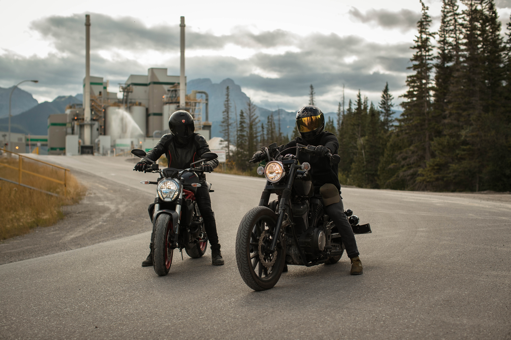

DEMAND PAGE
.jpg)




Ecommerce is a method of buying and selling goods and services online. The definition of ecommerce business can also include tactics like affiliate marketing. You can use ecommerce channels such as your own website, an established selling website like Amazon, or social media to drive online sales.
Software development refers to a set of computer science activities dedicated to the process of creating, designing, deploying and supporting software. Software itself is the set of instructions or programs that tell a computer what to do. It is independent of hardware and makes computers programmable.
QL is used to communicate with a database. According to ANSI (American National Standards Institute), it is the standard language for relational database management systems. SQL statements are used to perform tasks such as update data on a database, or retrieve data from a database.
Computational finance emphasizes practical numerical methods rather than mathematical proofs and focuses on techniques that apply directly to economic analyses. It is an interdisciplinary field between mathematical finance and numerical methods.
Python is a computer programming language often used to build websites and software, automate tasks, and conduct data analysis. Python is a general-purpose language, meaning it can be used to create a variety of different programs and isn't specialized for any specific problems
Java is a widely-used programming language for coding web applications. It has been a popular choice among developers for over two decades, with millions of Java applications in use today. Java is a multi-platform, object-oriented, and network-centric language that can be used as a platform in itself.
Data analytics (DA) is the process of examining data sets to find trends and draw conclusions about the information they contain. Increasingly, data analytics is done with the aid of specialized systems and software.
JavaScript (JS) is the most popular lightweight, interpreted compiled programming language. It can be used for both Client-side as well as Server-side developments. JavaScript also known as a scripting language for web pages.
Cloud computing is on-demand access, via the internet, to computing resources—applications, servers (physical servers and virtual servers), data storage, development tools, networking capabilities, and more—hosted at a remote data center managed by a cloud services provider (or CSP).
click on the more option to know more about skills'☞ More
The Mahindra Thar RWD variants will feature a distinct RWD badging on the rear quarter panel.Price of Mahindra Thar in India ranges between Rs. 10.54 Lakh and Rs. 16.78 Lakh. The Mahindra Thar variants start from 10.54 Lakh - AX Opt RWD Hard Top Diesel and goes upto 16.78 Lakh - LX diesel AT 4WD With MLD. Mahindra Thar is also available on EMI starting at Rs. 21.64 K with 8.5% interest rate.
The Maruti Baleno has 1 Petrol Engine and 1 CNG Engine on offer. The Petrol engine is 1197 cc while the CNG engine is 1197 cc . It is available with Manual & Automatic transmission.Depending upon the variant and fuel type the Baleno has a mileage of 22.35 kmpl to 30.61 km/kg . The Baleno is a 5 seater 4 cylinder car and has length of 3990mm, width of 1745 and a wheelbase of 2520.
The Maruti Alto 800 has 1 Petrol Engine and 1 CNG Engine on offer. The Petrol engine is 796 cc while the CNG engine is 796 cc . It is available with Manual transmission.Depending upon the variant and fuel type the Alto 800 has a mileage of 22.05 kmpl to 31.59 km/kg . The Alto 800 is a 4 seater 3 cylinder car and has length of 3445mm, width of 1515mm and a wheelbase of 2360mm.
The Maruti Swift has 1 Petrol Engine and 1 CNG Engine on offer. The Petrol engine is 1197 cc while the CNG engine is 1197 cc . It is available with Manual & Automatic transmission.Depending upon the variant and fuel type the Swift has a mileage of 22.38 kmpl to 30.9 km/kg . The Swift is a 5 seater 4 cylinder car and has length of 3845mm, width of 1735 and a wheelbase of 2450.
The Tata Nexon has 1 Diesel Engine and 1 Petrol Engine on offer. The Diesel engine is 1497 cc while the Petrol engine is 1199 cc . It is available with Manual & Automatic transmission.Depending upon the variant and fuel type the Nexon has a mileage of 24.07 kmpl & Ground clearance of Nexon is 209. The Nexon is a 5 seater 4 cylinder car and has length of 3993, width of 1811 and a wheelbase of 2498.
Hyundai Creta has a price range between Rs 10.87 lakh and Rs 19.20 lakh (ex-showroom Delhi). Variants: It can be had in seven broad variants: E, EX, S, S+, SX Executive, SX and SX(O). The Knight Edition is only available on the S+ and S(O) trims.The price of Hyundai Creta starts at Rs. 10.87 Lakh and goes upto Rs. 19.20 Lakh. Hyundai Creta is offered in 25 variants - the base model of Creta is E and the top variant Hyundai Creta SX Opt Knight Diesel AT DT which comes at a price tag of Rs. 19.20 Lakh.
The price of Maruti Wagon R starts at Rs. 5.54 Lakh and goes upto Rs. 7.42 Lakh. Maruti Wagon R is offered in 11 variants - the base model of Wagon R is LXI and the top variant Maruti Wagon R ZXI Plus AT Dual tone which comes at a price tag of Rs. 7.42 Lakh.
The price of Tata Punch starts at Rs. 6 Lakh and goes upto Rs. 9.52 Lakh. Tata Punch is offered in 26 variants - the base model of Punch is Pure and the top variant Tata Punch Creative AMT IRA DT which comes at a price tag of Rs. 9.52 Lakh.
click on the more option to know more about the car's☞ More
The Hero Splendor Plus is powered by a 97.2 cc air-cooled engine which produces 8.02 PS @ 8000 rpm of power. It has a fuel tank of 9.8 L and a claimed mileage of 70 kmpl. The Hero Splendor Plus starts at Rs 73,481 and goes up to Rs 74,801 (ex-showroom, Delhi). It is available in four variants.
The price of Honda Activa 125 in India starts at Rs. 78,920.and goes upto Rs. 88,093. Honda Activa 125 comes with 4 variants which includes Honda Activa 125 Drum, Honda Activa 125 Drum Alloy, Honda Activa 125 Disc, Honda Activa 125 H-Smart. The top variant is Honda Activa 125 H-Smart which comes at a price tag of Rs. 88,093.
TVS Apache RTR 160 4V is a motorcycle with a starting price of Rs 1.24 Lakh. It is available in India in 5 variants and 6 colours with high end variant price starting from Rs 1.45 Lakh. Apache RTR 160 4V is powered by a 164.9 ccbs6 engine which develops a power of 19.2 PS and a torque of 14.2 Nm. It has Disc front brakes and Disc rear brakes. The weight of TVS Apache RTR 160 4V is 148 kg and comes with a fuel tank capacity of 12 L.
The Pulsar NS200 is available in only one variant, priced at Rs 1,49,363 (ex-showroom Delhi). It is offered in four paint schemes: Ebony Black, Pearl Metallic White, Cocktail Wine Red and Pewter Grey.The price of Bajaj Pulsar NS200 in India starts at Rs. 1,40,666.and goes upto Rs. 1,49,363. Bajaj Pulsar NS200 comes with 2 variants which includes Bajaj Pulsar NS200 STD, Bajaj Pulsar NS200 STD 2023. The top variant is Bajaj Pulsar NS200 2023 STD which comes at a price tag of Rs. 1,49,363.
Yamaha FZ-X is a motorcycle with a starting price of Rs 1.36 Lakh. It is available in India in 2 variants and 4 colours with high end variant price starting from Rs 1.37 Lakh. FZ-X is powered by a 149 ccbs6 engine which develops a power of 12.4 PS and a torque of 13.3 Nm. It has Disc front brakes and Disc rear brakes. The weight of Yamaha FZ-X is 139 kg and comes with a fuel tank capacity of 10 L.
click on the more option to know more about the bike's☞ More
Much of Samsung’s interest generator was likely the Samsung Galaxy S23 series, which may have led it to become one of the top 10 smartphone brands in India in Q1 2023. The smartphone, like every year, became among the very first to launch with Qualcomm’s new flagship chip, and according to Samsung itself, the Galaxy S23 series has already sold 1.4x more than 2022’s Galaxy S22. All of this has led to Samsung being the most searched smartphone brand in Q1 2023, with a 17 percent share.
At the second spot, just as in the smartphone shipment market shares, is Xiaomi, capturing 15.9 percent of all user searches on 91mobiles. The China brand, which for long ruled the Indian smartphone market as the number one selling brand, notably launched its flagship Xiaomi 13 Pro in India during this period.Like Samsung, the Xiaomi 13 Pro is one of the first phones with the Snapdragon 8 Gen 2 chip in India, and alongside this, it offers a host of premium features such as a 2K+ display, three 50MP rear cameras, and an association with legendary German camera-maker, Leica. It is this launch, coupled with the rollout commencement of Xiaomi’s custom interface, MIUI 14, that kept the brand at the top of the search and user interest queries through Q1 2023.
At the third spot in terms of user interest is Realme, which has had a comparatively quieter start to the year in India. However, the company did unveil the Realme GT 3 at the Mobile World Congress this year, which has made its way to India already. The flagship-grade smartphone runs on a generation-old flagship Qualcomm chip, but nevertheless makes for an interesting package in terms of overall specs and pricing.
The presence of OnePlus near the top of the list would have been a bigger surprise had it happened in shipment figures but is not so much in terms of user interest. In the first three months of the year, OnePlus took to the stage to launch its flagship for the year — the OnePlus 11 5G. The latter has since been critically acclaimed and makes for one of the most well-balanced flagship smartphones of the year so far.
iPhone is a line of smartphones produced by Apple Inc. that use Apple's own iOS mobile operating system. The first-generation iPhone was announced by then-Apple CEO Steve Jobs on January 9, 2007. Since then, Apple has annually released new iPhone models and iOS updates. As of November 1, 2018, more than 2.2 billion iPhones had been sold. As of 2022, the iPhone accounts for 15.6% of global smartphone market share.
click on the more option to know more about the phones's☞ More
raditional Indian textiles and techniques are an integral part of Indian fashion, and they continue to be a significant trend in 2023. From handwoven fabrics like khadi, chikankari, and bandhani to embroidery styles like zardozi and mirror work, designers are incorporating these traditional techniques into contemporary designs. This fusion of old and new is creating unique and exciting fashion pieces that celebrate India's rich cultural heritage.
Sustainable and eco-friendly fashion is gaining traction in India, with designers incorporating ethical and eco-conscious practices into their designs. From using natural and organic fabrics to promoting fair trade and upcycling, the focus is on reducing the impact on the environment and promoting social responsibility.
Fusion wear and Indo-western styles are becoming increasingly popular in Indian fashion, blending traditional elements with modern Western designs. This trend is often seen in formalwear, such as sarees and kurtas, incorporating Western cuts, silhouettes, and fabrics to create a unique look.
Bright and bold colours are a staple of Indian fashion, and they are expected to remain popular in 2023. Vibrant shades of red, pink, orange, and yellow are especially popular, and they are often paired with intricate embroidery or embellishments to create stunning outfits.
Handcrafted and artisanal fashion refers to clothing and accessories that are made by skilled artisans using traditional techniques and materials. This trend has been growing in popularity in recent years as consumers seek unique and one-of-a-kind items that are made with care and attention to detail. In Indian fashion, handcrafted and artisanal fashion is particularly important, as the country has a rich history of textile and craft traditions. From handwoven fabrics to intricate embroidery and beadwork, Indian artisans produce some of the most beautiful and intricate fashion pieces in the world. This trend is expected to continue in 2023, with more designers incorporating handcrafted and artisanal elements into their collections.
click on the more option to know more about the fashion's☞ More
Nike was originally called Blue Ribbon sports. We all are aware that it is the top shoe brand in India. Nike got its name back in 1978.It is an American based multinational corporation which designs, makes, manufactures, and sells footwear, clothing and equipment etc.
Adidas is a universal firm that designs and manufactures footwear, clothing as well as accessories. Reebok, Taylor made, and Runtastic are parts of Adidas. Approx 57,016 employees work for the brand. A German football club, named Bayern Munich, is owned by the firm
The parent organisations of Puma is Artemis S .A. Kering. It is a German based multinational firm which is located in Herzogenaurach, Bavaria.
From August 2005, Reebok International Limited has been a subordinate of German sporting goods giant Adidas.It manufactures and sells clothing and footwear for fitness and running and Crossfit shoes. It is one of the best shoe as well as sports shoe brand in India.
The owner of Bata is the Bata Family. It is one of the hugest top brand shoes in India as well as an industry's champion. In total it is organised in three business units named as Bata, Bata Industrials and AW Lab. It is a family owned inherited enterprise. According to volume, it is the World’s largest shoemaker.
click on the more option to know more about the shoe's☞ More
When the world is becoming digital and everything is now available on the internet. It is an excellent time to create a career in digital marketing. There is a high demand for digital marketers in today’s world. In this, the main aim of the professional is to understand how a product or a service can be well marketed and made known to people through the medium of the internet and social media. There are many short- and long-term courses through which one can become a digital marketing professional.
An immersive Full-Stack Developer course will help you build a solid foundation to impress the top-tech professionals and recruiters to land a good job in a product-based company. It is one of the world’s top professional courses. You will be able to gain a thorough understanding of how to deploy, create, secure, and scale programs, as well as become familiar with the user interface, database stacks, and business logic.
Machine learning is a branch of Artificial Intelligence where the system learns from the data, identifies patterns and makes decisions with minimal human intervention. It is a method of data analysis that automates analytical model building. Even though Machine Learning came to the spotlight only in recent years, it was in existence since World War 2 when Alan Turing built the Enigma Machine. In today's world, we see Machine Learning all around us. For example, Google's self-driving car and recommendations on Spotify, Netflix and other platforms come under Machine Learning.
As much as people try to lead and live a healthy life, medical practitioners will always be needed in society because emergencies do occur which require professionals to deal with. Doctors, nurses, scientists, and clinical officers are essential service providers. Since the world's population is growing year on year, the services of these professionals will also be needed more. Scientists and Researchers also play an important role in order to make new discoveries in the medical field.
PMP (Project Management Professional) is an important certification for Project Management professionals. This program’s focus is to introduce students to a variety of project management techniques and tools, often with hands-on project training. During this course, you will not only learn how to manage project timelines, but also how to make the best use of the project resources, and how to execute and deliver the projects on time within a given budget.
click on the more option to know more about the course's☞ More
click on the more option to know more about the college's☞ More
Famous for its pristine beaches, hippie vibes, laidback lifestyle, and vibrant parties, Goa is counted among the best holiday destinations in India. The union territory is frequented by tourists year-round, especially in the winter season when the climate is pleasant, and the entire place comes alive with Christmas and New Year celebrations. Goa is definitely one of the top 5 tourist places in India. However, seasoned tourists do not shun Goa during summer either.
Agra and the first thing that comes to mind is the magnificent Taj Mahal, one of the Seven Wonders of the World. This beautiful city with its rich historical background is situated in Uttar Pradesh, on the banks of River Yamuna. It is counted among the top tourist places in India for architecture lovers and history buffs, thanks to many amazing Mughal architectural masterpieces that adorn the cityscape. No matter how many times you visit Agra, the charm of the Taj Mahal and other monuments will never fail to impress.
The land of kings, Rajasthan is a vibrant state that attracts history buffs, architecture lovers, wildlife enthusiasts and foodies alike. It lies in the northwestern part of India and boasts an impressive amalgamation of natural beauty and manmade structures. From beautiful lakes, vast deserts, and rich wildlife to magnificent palaces, forts, and temples, the city has so many things for a wonderful vacation.
New Delhi, the national capital of India, is one of the most cliched yet popular tourist destinations in the country. The state has so much to offer that visiting it once or twice is not enough. Delhi is dotted with iconic Mughal monuments, temples, heritage sites, performing arts venues, colourful bazaars, shopping malls, planetariums, museums, and restaurants, so there is something for everyone here. Chandni Chowk, the oldest and busiest market in the country, is in Delhi.
Nestled in the Western Ghats in the state of Kerala, Munnar is counted among the most serene and beautiful places to visit in India. The hill station boasts impeccable natural beauty in the form of rolling hills, scenic valleys, virgin forests, waterfalls, streams, national parks, tea and spice plantations and winding walkways.
click on the more option to know more about the place's☞ More
Located in southern Peru, this ruined city lies on top of a mountain that’s only accessible by train or hiking the Inca Trail. Rediscovered by Hiram Bingham in 1911, it was an important cultural center for the Inca civilization but was abandoned when the Spanish invaded the region. (It is famously referred to as the “Lost City of the Incas,” though that is actually Vilcabamba). The location was made a UNESCO World Heritage Site in 1983, and it was named one of the New Seven Wonders of the World in 2007.
The ruined temples of the Mayan city of Tikal, in the jungles of Guatemala Tikal National Park is home to the largest and best-preserved ruins of the ancient Mayan civilization, and the city-state centered here was a dominant force in the Mayan world during the Classic Period (200-900 CE). Located in Guatemala, be sure to spend the night in the park, as you’ll really get to see it without the crowds.
The towering pyramids in the desert of Egypt, with the mysterious Sphinx in the foreground The Pyramids are truly a marvel of human engineering. They’re over 3,000 years old, and we still don’t have a good idea as to how they were built or how the Egyptians made them so precise. The three pyramids align with the stars and the solstices, and contain tons of chambers that still haven’t been (and cannot be) opened. I mean, how did they create those little chambers where people can’t even crawl through?
This ancient city in Cambodia was the center of the Khmer Empire that once ruled most of Southeast Asia. This empire fell into decline, but not before building amazing temples and buildings that were later reclaimed by the jungle for hundreds of years.
The Colosseum and the Forum are right next to each other in Rome. The Colosseum was the largest amphitheater in the entire Roman Empire (it could hold 50,000-80,000 people), while the Roman Forum was the center of Roman public life and the place from which Rome administered its empire. Remnants of a civilization that once controlled the known world, these sites are breathtaking not only for their beauty but also for their history and age, dating back around 2,000 years.
click on the more option to know more about the place's☞ More